The Spectacular World of Neutron Stars
- June 04, 2024
- Admin
- 3 Comments
Introduction
The collapse of a massive star in a supernova explosion is an epic event. In less than a second, a neutron star (or in some cases, a black hole) is formed, reversing the implosion and releasing prodigious amounts of light that can outshine billions of suns. This dramatic birth is spectacular, but the properties of neutron stars are no less impressive, despite their relative obscurity compared to black holes.
Origin
When the core of a massive star collapses, its fate depends on its mass. For the majority of stars, this collapse leads to the formation of a neutron star, a dense ball of neutrons
resulting from the fusion of protons and electrons. These stellar remnants pack up to three times the mass of our Sun into a sphere no larger than a city like Washington, D.C. The
density of neutron stars is staggering: all of humanity could be compressed into a sugar cube-sized piece of neutron star matter. The escape velocity from their surface is over
half the speed of light, making any attempt to approach futile as any object would be crushed and assimilated almost instantly.
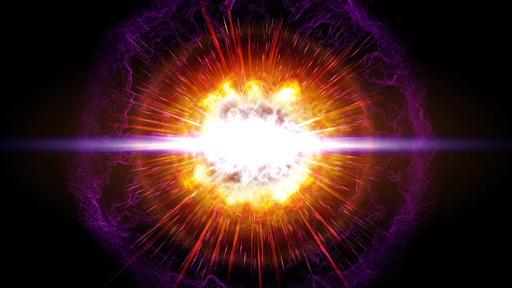
Pulsars and Nobel Prizes
Pulsars, a type of neutron star, have been invaluable to physics research, earning two Nobel Prizes. The first was awarded to Antony Hewish for their discovery. The second went
to Russell Hulse and Joseph Taylor, who discovered the first binary pulsar, PSR1913+16. This discovery has been crucial for testing Einstein's Theory of General Relativity.
Another significant object, the double pulsar system PSR J0737-3039A/B, provides one of the best tests for General Relativity and alternative theories of gravity.
While famous discoveries capture public attention, most neutron star research happens between these sensational breakthroughs. One key question is the composition of neutron star cores, which could consist
of either neutrons or free quarks. Research by Steiner et al. has not yet resolved this, but future studies hold promise. Significant findings include precise mass measurements,
such as a neutron star weighing 1.97 solar masses, and rapid spin rates like PSR J1748-2446ad, which spins 716 times per second.
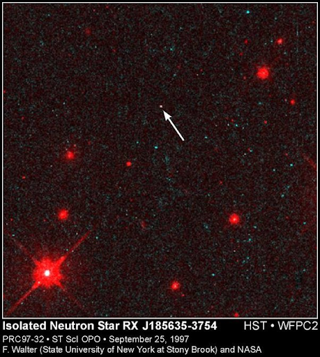
Visible Surfaces and Extreme Conditions
Unlike black holes, neutron stars have visible surfaces, allowing scientists to study their atmospheres and interiors. For instance, in 2009, researchers discovered a carbon atmosphere
on the neutron star in the Cassiopeia A supernova remnants using NASA's Chandra X-ray Observatory. The carbon atmosphere, compressed by a surface gravity 100 billion times stronger than
Earth's, resolved mysteries about the neutron star's nature.
Neutron stars possess the strongest magnetic fields known, from 104 to 1011 Tesla. These fields are inferred from the spin-down
rate of pulsars, which rotate between milliseconds and seconds. Millisecond pulsars, with periods between 1.5 to 10 milliseconds, are particularly interesting. They are old, yet their rapid
rotation suggests they were spun up by accreting matter from a binary companion.
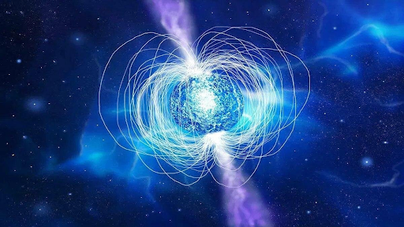
Impact on Astrophysics and Human Understanding
Neutron stars allow us to explore extreme physical conditions. They help test the limits of relativity, as they rotate at speeds up to two-thirds the speed of light. Their extreme density
provides insights into matter's behaviour under immense pressure. Binary neutron stars emit gravitational waves, offering stringent tests of general relativity. Colliding neutron stars
produce heavy elements like gold and platinum, essential for understanding the cosmos.
The detection of gravitational waves from neutron star mergers, combined with electromagnetic
observations, has ushered in a new era of multi-messenger astronomy. This allows scientists to study neutron stars across various wavelengths and gravitational signals, providing a
comprehensive view of these enigmatic objects.Given the rapid advancements in neutron star research, a special issue focusing on theoretical and observational studies is timely.
Contributions on magnetars, radio pulsars, X-ray pulsars, and other manifestations of neutron stars are encouraged to provide an updated overview of this dynamic field.
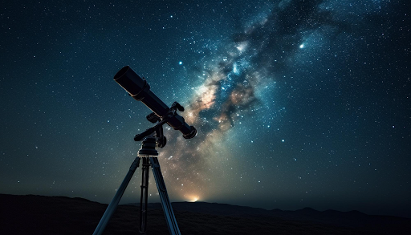
The Future of Neutron Star Research
Theoretical studies suggest that some binary neutron-star mergers could result in supermassive millisecond magnetars or stable neutron stars if the equation of state is sufficiently stiff. The discovery of a magnetar in 2020 adds to the exotic family of neutron stars. Magnetars have incredibly strong magnetic fields, which could influence phenomena like gamma-ray bursts, challenging our understanding of these events.
Detection and Observation of Neutron Stars
Electromagnetic Spectrum Observations
Neutron stars are primarily detected through their electromagnetic emissions, spanning radio waves to gamma rays. The techniques and instruments involved vary depending
on the type of radiation being observed:
1. Radio Observations:
Pulsars, the rotating neutron stars, were first discovered through their radio emissions.
Radio telescopes, such as the Arecibo Observatory and the Parkes Radio Telescope, are essential tools for detecting and studying these emissions. The periodic nature of
pulsar signals allows astronomers to determine their rotation periods with high precision. The discovery of millisecond pulsars, which rotate hundreds of times per second,
has been crucial for studying the extreme physics governing neutron stars.
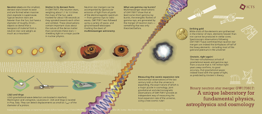
2. Optical Observations:
Although neutron stars are incredibly dense and small, they can sometimes be
observed in the optical spectrum, particularly if they are part of a binary system. Telescopes like the Hubble Space Telescope have observed neutron stars in the visible
spectrum, providing valuable data on their temperatures and the surrounding environment.
3. X-ray Observations:
Neutron stars, especially those in binary
systems, can be strong X-ray sources. Instruments like the Chandra X-ray Observatory and XMM-Newton have detected X-ray emissions from the hot surfaces of neutron stars
and the accretion disks of material falling into them. These observations help in understanding the thermal and magnetic properties of neutron stars.
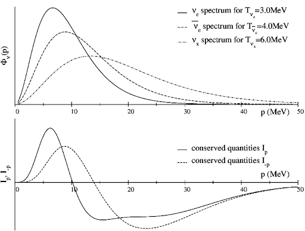
4. Gamma-ray Observations:
The Fermi Gamma-ray Space Telescope has been instrumental in detecting gamma-ray emissions from pulsars and magnetars. These high-energy observations
provide insights into the extreme magnetic fields and particle acceleration processes occurring on neutron stars.
Gravitational Wave Detection
The detection of gravitational waves from neutron star mergers has revolutionised our understanding of these objects. Instruments like LIGO (Laser Interferometer Gravitational-Wave Observatory)
and Virgo have observed the ripples in spacetime caused by the collision of neutron stars. The first such detection, GW170817, confirmed theories about the production of heavy elements in these
mergers and opened a new window for multi-messenger astronomy, where gravitational waves and electromagnetic signals are observed from the same event.
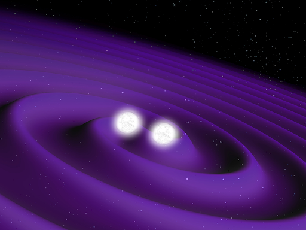
Neutrino Observations
Neutron star formation in supernovae and the merger of neutron stars are also expected to emit neutrinos. Observatories like Super-Kamiokande and IceCube are designed to detect these nearly
massless particles. Although challenging to detect due to their weak interaction with matter, neutrinos can provide unique information about the core-collapse processes and the interior of
neutron stars.
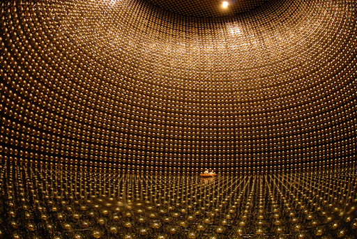
Technical Aspects of Neutron Star Detection
Pulsar Timing and Surveys
Pulsar timing is a precise measurement technique used to study the rotation of pulsars. By recording the arrival times of pulsar signals, astronomers can measure changes in the rotation
period, revealing information about the star’s interior and its environment. Large-scale surveys, such as the Parkes Multibeam Pulsar Survey, have discovered hundreds of pulsars, expanding
our understanding of the population and distribution of neutron stars in the galaxy.
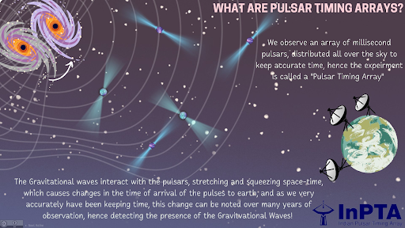
X-ray Timing and Spectroscopy
X-ray
timing involves measuring the periodic X-ray emissions from neutron stars, particularly those in binary systems. Instruments like NICER (Neutron star Interior Composition Explorer) on the
International Space Station provide high-precision timing data, allowing scientists to probe the equation of state of dense matter in neutron stars. X-ray spectroscopy, on the other hand,
analyses the energy spectrum of X-ray emissions, revealing details about the composition and physical conditions of the neutron star's surface and surrounding material.
Radio
Astronomy and Interferometry
Radio interferometry, which involves combining signals from multiple radio telescopes, enables high-resolution observations of neutron stars. The Very Large
Array (VLA) and the Square Kilometre Array (SKA) are examples of interferometric arrays that provide detailed images and spectra of pulsars and their surroundings. These observations are
crucial for studying the magnetospheres of pulsars and the interaction of their magnetic fields with the interstellar medium.
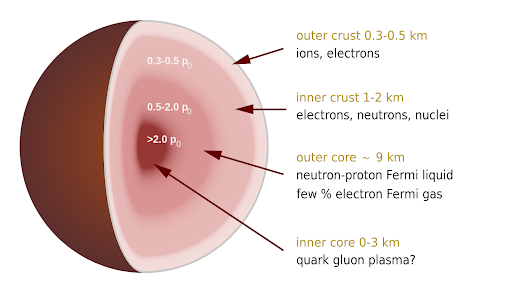
Challenges and Future Directions
Understanding the Equation of State
One of the major challenges in neutron star research is understanding the equation of state (EoS) of nuclear matter at extremely high densities. The EoS describes how matter behaves at
different densities and pressures, which is essential for predicting the structure and properties of neutron stars. Observations of neutron star masses, radii, and cooling rates provide
constraints on theoretical models, but more precise measurements are needed to distinguish between competing theories.
Multi-Messenger Astronomy
The advent of multi-messenger astronomy, combining gravitational waves, electromagnetic signals, and neutrinos, holds great promise for neutron star research. Coordinated observations
across different types of detectors can provide a more complete picture of neutron star mergers and their aftermath. Upcoming observatories like the Einstein Telescope and the Cosmic
Explorer will enhance our ability to detect gravitational waves from these events.
High-Performance Computing and Simulations
Advances in high-performance computing have enabled detailed simulations of neutron star mergers and supernova explosions. These simulations are crucial for understanding the complex
physics involved, from the behaviour of nuclear matter to the generation of gravitational waves and heavy elements. Future developments in computational power and algorithms will allow
for even more realistic models, aiding in the interpretation of observational data.
Exploring Exotic States of Matter
Neutron stars provide a natural laboratory for studying exotic states of matter, such as quark-gluon plasma and colour superconductivity. These states are predicted by quantum chromodynamics (QCD) but are difficult to create and study in terrestrial laboratories. Observations of neutron star properties, such as their masses and spin rates, can provide indirect evidence for these exotic states, advancing our understanding of fundamental physics.
Conclusion
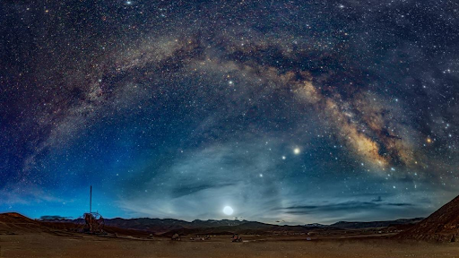
Neutron stars are extraordinary objects that push the boundaries of physics. Their study provides invaluable insights into the universe's most extreme conditions, helping us understand the
fundamental laws that govern everything from the tiniest particles to the largest cosmic structures. The continued exploration of neutron stars through multi-wavelength observations,
gravitational wave detection, and theoretical modeling promises to reveal even more about these fascinating remnants of stellar evolution. As we refine our observational techniques and
theoretical models, neutron stars will undoubtedly continue to be at the forefront of astrophysical research, shedding light on the most extreme and enigmatic aspects of our universe.